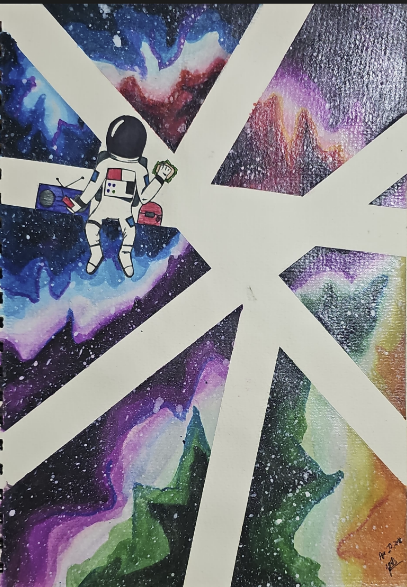
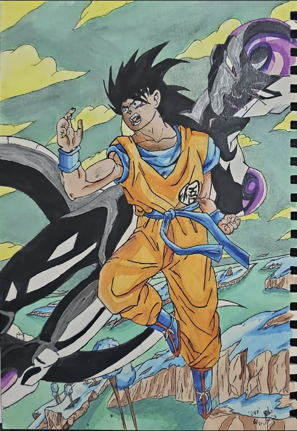
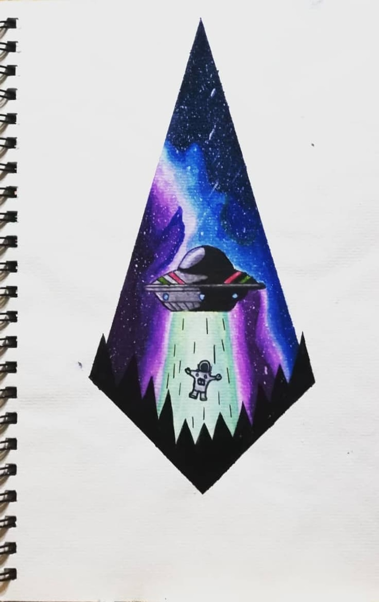
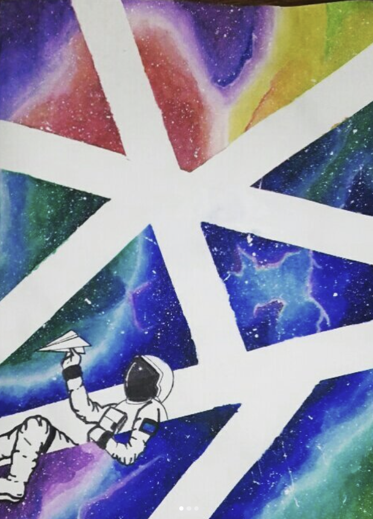
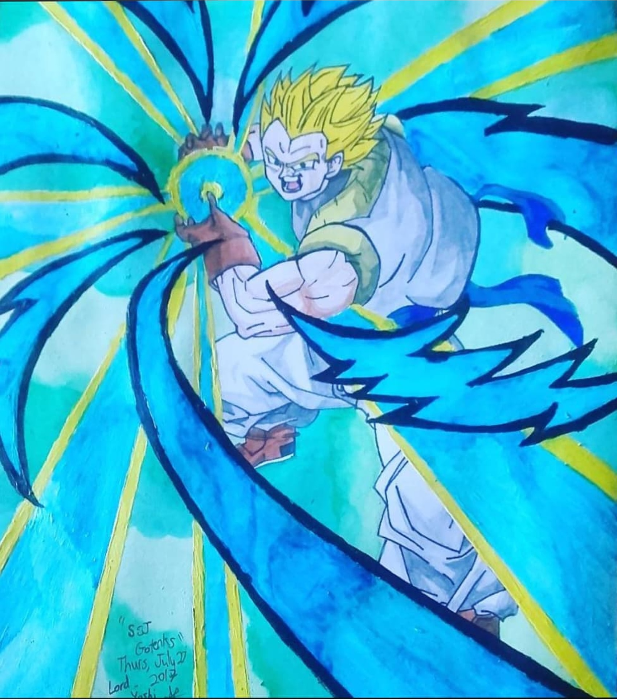

This page presents a timeline of my artistic journey through watercolor paintings and studies.
It features a curated collection of watercolor works and experiments in chronological order,
highlighting milestones from early techniques to more advanced studies. Explore how my skills and creative vision have developed over time.
“Out-N-In MK4 Supra” was created on August 12, 2022 using pencil, fineliner,highlighter, and watercolor paint.
This composition required a significant amount of time and effort,
meticulously following the rules of perspective to ensure the car and building were set proportionally.
I carefully chose a cool palette to convey a serene, twilight atmosphere, enhancing the visual harmony of the scene. Using a highlighter exclusively on the highlights of the car created a striking glow effect,
making the vehicle stand out against the softer watercolor background. The combination of different mediums showcases my ability to merge various techniques,
and the creative composition highlights my skills in both detail and imaginative design.

Watercolor casual practice
“Watercolor Practice” was completed in 2019, using pencil, fineliner, and watercolor paint.
This piece features four watercolor objects, each created without a time limit to practice casual watercolor techniques and add variety.
I am particularly fond of the Chance the Rapper figure in the corner; the blue glow against a warm red background, along with the even pigmentation of the skin,
creates a mini masterpiece within the larger composition.
This practice piece allowed me to explore different styles and refine my skills,
along with taking a break from the rigid rules I had set for myself in previous Galaxy projects; resulting in a diverse and vibrant piece.

“Galaxy Man Casual” was around December, 2018, using pencil, fineliner, alchohol marker,and watercolor paint.
I found this drawing a nice change of pace, allowing me to slightly shift focus to human body proportions while keeping it within the Galaxy Man series.
Combining these mediums provided great insight into the quality of the product that can be created for future projects, showcasing the potential for rich textures, vibrant colors, and intricate details.
This experience has been invaluable for refining my techniques and envisioning new possibilities for future projects.

“Stellar Creations” was completed on July 9, 2018, using watercolor, acrylic paints,water marker, pencil, Glaze, and fineliner pen.
One of the trickiest aspects of this piece was working on poster board rather than traditional watercolor paper,
which required careful consideration at each step. The glaze would be used to create a shiny effect, which was only applied to the galaxy area. The astronaut featured is the same character from "Astral Plane" and "Launch Break".
I took creative liberties with the composition, infusing the scene with elements of comedy and intrigue.

“Ultimate Spiderman,” created on July 2, 2018, features Marvel’s Ultimate Spiderman Comic Variant and was crafted using pencil, fineliner, and watercolor paint.
Knowing I had to use a single color, I was able to adapt to different shades to create a dynamic, three-dimensional effect.
Rather than using color pencil or marker to create these different shades, I chose watercolor to expand my ability.
This technique brings depth and vibrancy to the piece, making Spider-Man and the cityscape come alive.

“Page Breaker” was created on May 25, 2018, using pencil, fineliner, and watercolor paint.
This piece is the first time in which I had drawn this concept, which would later become a recurring elemenet in future pieces.
From the tears into the page, to the flow of the galaxies, I took extra care to blend real and surreal elements seamlessly
, ensuring that the precision of the pencil and fineliner work highlighted the intricate details drafted.
The dreamy, ethereal quality of the watercolor galaxy adds depth and a sense of infinite space

“Launch Break” was created on April 22, 2018, using a mix of fineliner pen, pencil, and watercolor paints.
This piece is a follow-up to “Astral Plane” and is part of a series of practice pieces. The contrast of different colors mixed to create a stellar nebula effect,
along with the creative stylization of the astronaut, was kept consistent with the previous piece.
Additionally, this artwork places a heavy emphasis on the watercolor galaxy, much like its predecessor.
The vibrant and dynamic galaxy background not only enhances the overall composition but also showcases the depth and richness achievable with watercolor techniques.
This focus on the galaxy theme ties the series together, highlighting the beauty and complexity of space through the medium of watercolor.

“Dragon Ball Cover” was created on March 23, 2018, using watercolor paints, permanent marker, and fineliner pen.
It was inspired by the iconic covers of the Dragon Ball manga, featuring dynamic character composition, watercolor paints, and effective color choices.
I thoroughly enjoyed making this piece, which served as a testament to my skills and creativity, such as composition to using silver permanent marker, adding highlights to the piece.
Through this artwork, I learned various techniques, such as outlining character clothing and creating different depths using similar colors, all inspired by the work of Akira Toriyama.

“Mondays” was created on February 23, 2018, using pencil, watercolor, and acrylic paints.
The mixing of two dark to bright colors respectively created the dynamic galaxy seen in the background, adding depth and vibrancy to the scene.
Using the glaze, the galaxy would have a shiny effect when under light, adding to the finished quality of the product.

“Astral Plane” was created on December 13, 2017, using a mix of fineliner pen, pencil, and watercolor paints.
In this piece, I brought to life a vibrant and expressive galaxy with a multitude of colors and dynamic brushstrokes.
The swirling patterns and vivid hues evoke a sense of wonder and exploration.
I paid close attention to the interplay of cool and warm colors to create the vibrancy of outer space.
I enjoy this piece more over time, as only with time does it become clear how elegantly the colors mix, creating the effect of a planet on the left and a bright nebula on the right.

“Super Saiyan Gotenks” was created on August 2, 2017, using a combination of gel pens, colored pencils, watercolor, and acrylic paints.
This was my first multimedia watercolor piece,
and I beleive one of the main reasons this piece stands out is the professional and consistent level achieved with the mix of materials, successfully executing the envisioned concept.
I was able to practice human proportions, along with traditional techniques using watercolor and acrylic paints, etc.
After I realized that it is viable to mix and match different mediums, it would be a viable option for future projects.


{kind=link}
{kind=link}
{kind=link}
{kind=link}
{kind=link}
{kind=link}
{kind=link}
{kind=link}